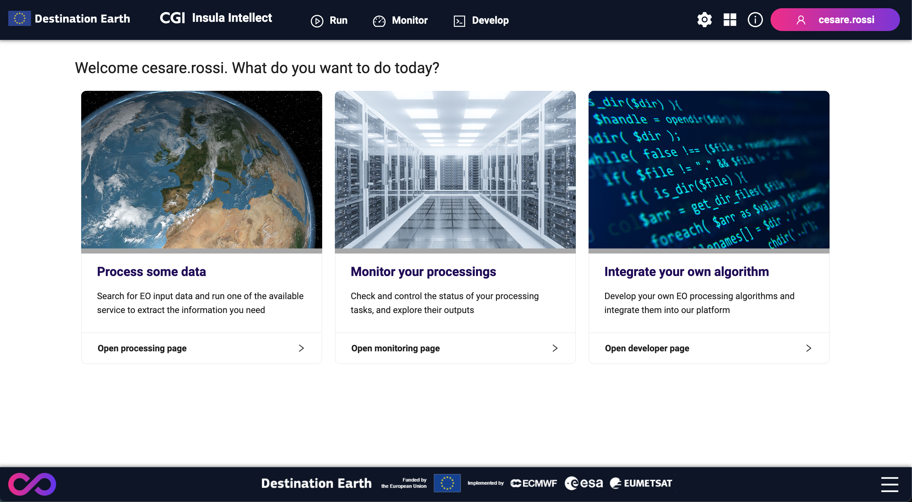

Insula Intellect
Insula Intellect is available at <base_url>/intellect.
Insula Intellect provides a way to:
Discover,
Execute,
Monitor, and
Develop processing services.
A processing service is a service that takes as an input data (typically Earth Observation data) and generates some added value data, extracting information from the original inputs. This process might increase the level of knowledge for a particular domain, case study or knowledge area.
Insula Intellect supports different execution modes:
Standard: the user selects the input data and start the processing. This is the most common and option for users.
Systematic: the user selects criteria for the input selection. It enables bulk processing. Only available to users with role Expert User.
Event driven: the user selects criteria for the input selection and the set of services to trigger. It enables bulk processing. Only available to users with role Expert User.
A user visiting Insula Intellect will find an interface similar to:
It provides the options:
Process some data, that is a way to select and run the available services.
Monitor you processing, to monitor the execution of the services and access the produced results.
Integrate your own algorithm, to develop new services and eventually made them available to the user community. Only available to users with role Expert User.